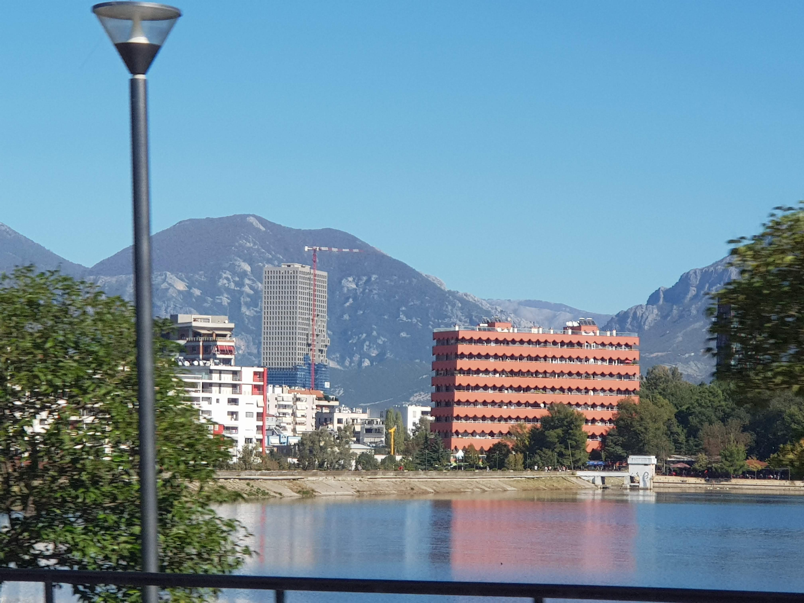
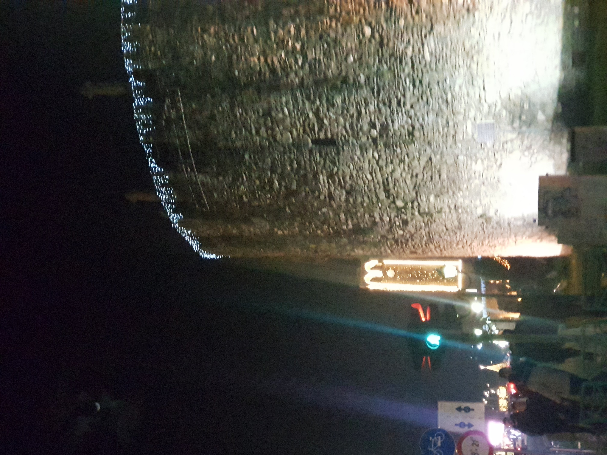
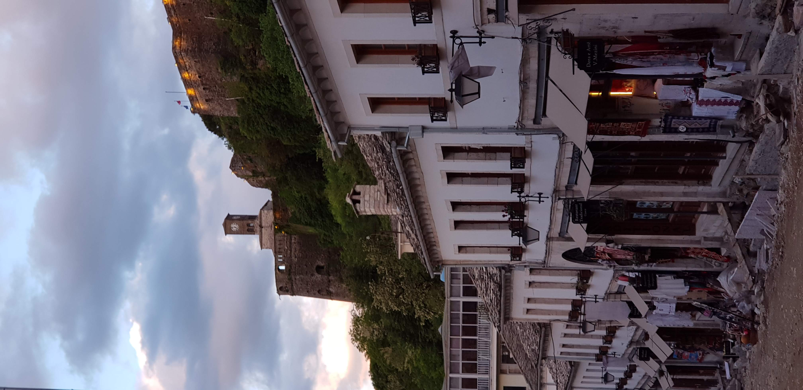

I grew up in Elbasan and have been back many times. Albania has an ancient history that goes back well before any empire passed through it, and most visitors only scratch the surface. Fortified hilltop towns, Greek and Roman ruins, mountains that rival anywhere in Europe, an Ionian coast with fewer people than Greece in summer, and prices that are still very reasonable.
Tirana, Albania
Worth two days minimum. Walk from the Skenderbeu monument towards the University to see the ministries. The city has changed fast and keeps changing.
Getting around
The city centre is walkable. Taxis are cheap but agree a price before you get in or use a metered one.
Driving note
Be extra cautious even on highways, there can be animals or people crossing out of nowhere.
Places worth going
01
Pazari i Ri (New Bazar)
The place locals go for food and coffee. Good for lunch with traditional Albanian dishes. Map
02
The Pyramid
A communist-era building that was Enver Hoxha's museum. Now a trendy space to climb on top of. Map
03
BunkArt 1 and 2
Two museums inside actual Cold War bunkers. They show what life was like during communism. BunkArt 1 is built into a mountain, BunkArt 2 is in the centre. Both worth visiting.
04
Blloku
The neighbourhood for cafes and nightlife. Was the exclusive area for Communist Party officials, now open to everyone. Map
05
Mount Dajt cable car
If you have time, the cable car up Mount Dajt gives good views over the city. Map
Where to eat
01
Mrizi i Zanave
Well known restaurant with everything bio and a village atmosphere. On the expensive side but good quality. Website

Have a tip about Tirana? Leave a note on the main page.
Elbasan, Albania
One of the oldest towns in Albania. I grew up here so I know it well. It does not get many tourists but has a history going back to Roman times.
Places worth going
01
Elbasan Castle
A well preserved castle with a long history in the centre of the old town. Worth a walk around. Do not eat at the restaurant inside the castle though, it is overpriced and not good. Map
Where to eat
01
Taverna Attika
Well known for Greek food. Great quality, many VIPs have eaten here. The owner lived in Greece for many years. Prices reflect the reputation but the food is genuinely good.

Have a tip about Elbasan? Leave a note on the main page.
Gjirokaster, Albania
UNESCO listed old town with a fortress that dominates the whole valley. Birthplace of both Enver Hoxha and Ismail Kadare, which tells you something about Albania's contradictions. The stone-paved streets are well preserved.
Places worth going
01
Gjirokaster Fortress
The castle above the city is the reason to come. Good views over the valley from the top.
02
Old Bazaar
The stone-paved bazaar quarter below the castle. Walk it in the morning before the tour groups arrive.

Have a tip about Gjirokaster? Leave a note on the main page.
Pogradec, Albania
Have a tip about Pogradec? Leave a note on the main page.
Durres, Albania
Main port and nearest beach city to Tirana. Worth a stop on the way back to Tirana from the south rather than taking the direct road.
Places worth going
01
Roman Amphitheatre
In the middle of the modern city, only rediscovered in the 1960s when someone was digging foundations. Enormous and largely unexcavated. One of the largest in the Balkans.
Have a tip about Durres? Leave a note on the main page.
Sarande, Albania
The main town on the Albanian Riviera. Good base for visiting Butrint and Ksamil. Corfu is visible from the promenade.
Coastal restaurants in autumn
Restaurants in Sarande and the coast generally start closing from early October. Check ahead if visiting in autumn.
Places worth going
01
Butrint
Greek, Roman, Byzantine and Venetian ruins in a lagoon setting just outside Sarande. One of the most atmospheric archaeological sites in the Balkans and usually quiet.
02
Ksamil
Small resort with turquoise water and small islands you can reach by a short boat ride. Gets crowded in August, beautiful in June or September.
Have a tip about Sarande? Leave a note on the main page.
Vlore, Albania
Places worth going
01
Himara and the Riviera
The coastal road between Vlore and Sarande passes through Himara and some of the best beaches on the Albanian Riviera. Drive it slowly.
Have a tip about Vlore? Leave a note on the main page.
Korce, Albania
Have a tip about Korce? Leave a note on the main page.
General notes
Something to add about Albania?
General feedback about this page, or a city you think should be added.